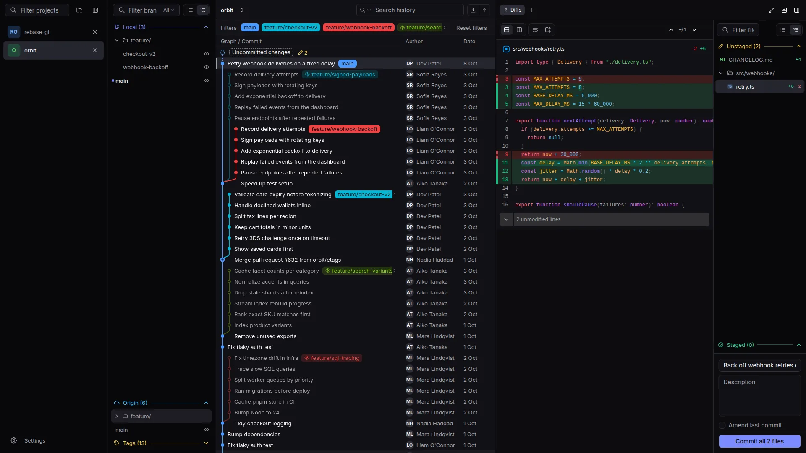

The fast Git client
for big repositories.
History, branches and rebases that keep up with you.
On your desktop or in your browser.
For macOS, Windows and Linux

 Rebase
GitHub
Rebase
GitHub
History, branches and rebases that keep up with you.
On your desktop or in your browser.
For macOS, Windows and Linux
